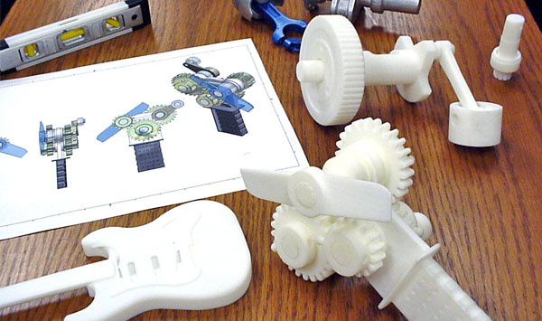

Сегодня для инженеров и дизайнеров существует действенный и выгодный способ упростить и ускорить процесс своей работы. Нет необходимости тратить деньги и время на создание одного опытного образца, чтобы определить его недостатки. Все, что нужно - это иметь 3D-принтер, с помощью которого можно быстро и недорого создать прототип, который практически полностью передаст функциональность, качества и внешний вид будущего изделия.
Для будущих инженеров и дизайнеров в школах и университетах сегодня существует возможность реализовать свои идеи и замыслы, создавая трехмерные модели и печатая их с помощью 3D-принтеров. Использование трехмерной печати в процессе изучения любых дисциплин позволит сделать его более полезным, наглядным и продуктивным. 3D-принтер в учебных заведениях – это самый эффективный и полезный инструмент обучения!
Создать именную кружку или корпус для мобильного телефона на основе собственного дизайна, а может деталь для салона автомобиля, которую трудно найти и купить – теперь проще простого! Просто нужно приобрести 3D-принтер и печатать для себя уникальные и неповторимые предметы, которыми обладаете только Вы. Игрушки, сувениры, посуда, детали механизмов и многое другое возможно создавать у себя дома используя трехмерную печать. Интересно, полезно и выгодно!
(с)2015-2019 Новые оптоэлектронные технологии